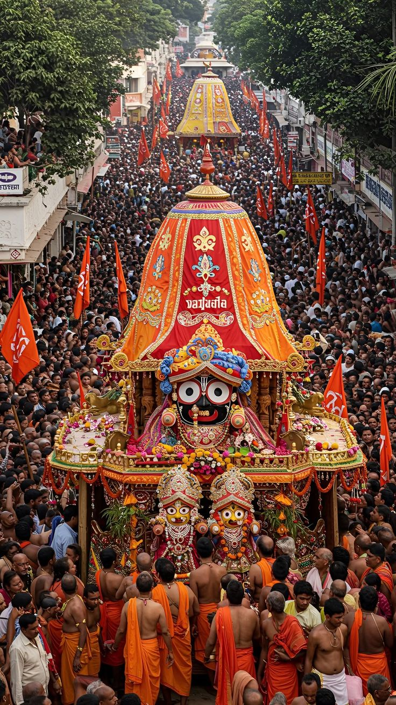
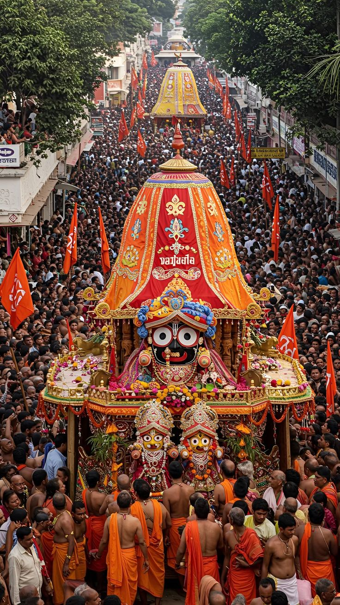
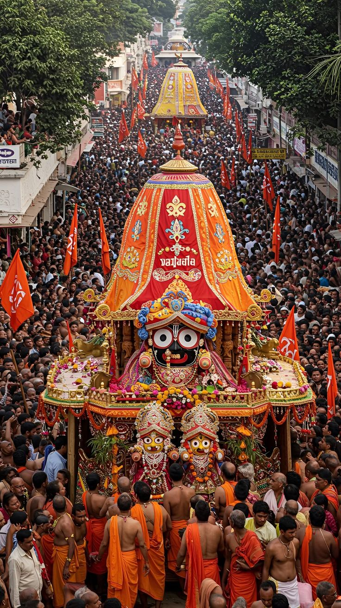

Temple images
 



The Jagannath Temple in Puri, Odisha, is a revered Hindu pilgrimage site and part of the Char Dham circuit, dedicated to the trinity of Lord Jagannath, Balabhadra, and Subhadra. Known for its striking Kalinga-style architecture, the temple is famous for its annual Ratha Yatra (chariot festival), the unique wooden deities that are ceremonially replaced, and the auspicious Mahaprasad. It holds immense spiritual significance as a place of devotion, symbolizing community harmony and cyclical renewal.
